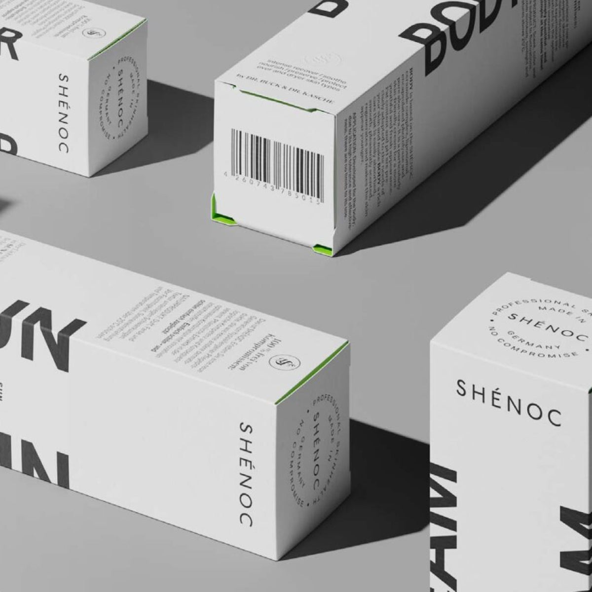

DIE MENSCHEN HINTER SHÉNOCMADE IN GERMANY

DR. DANIELA KASCHE & DR. PHILIPP BUCKPflege, hinter
der wir
wirklich stehen.
Was würden wir unseren Patienten und Freunden aus vollem Herzen empfehlen? Mit dieser Frage begann SHÉNOC.
Dr. Daniela Kasche und Dr. Philipp Buck verbinden dermatologisches Wissen mit einer klaren Idee: durchdachte Pflege, die ganz selbstverständlich Teil deines Lebens wird. Von der Entwicklung bis zur Herstellung entsteht die SHÉNOC Pflegelinie in Deutschland.
Unsere Geschichte kennenlernen